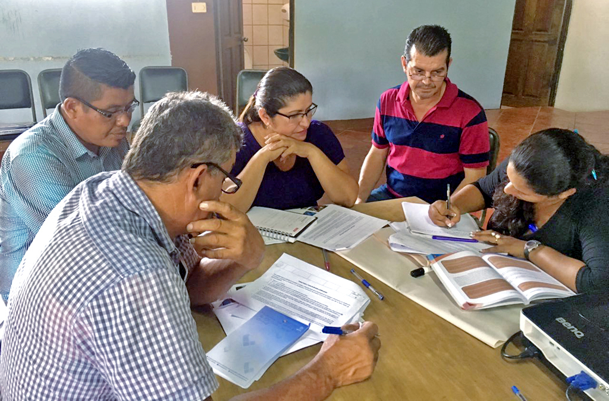

Taller de inicio con participación de personal técnico y autoridades municipales

Este taller es el punto de partida del proceso de planificación. Su objetivo principal es socializar la hoja de ruta para la elaboración del PDM, asegurando que tanto las personas funcionarias como las autoridades municipales comprendan los objetivos, las etapas, los plazos y los roles esperados de cada actor.
¿En qué momento se utiliza?
Se realiza en el momento inicial del proceso para generar un entendimiento común y disipar cualquier incertidumbre. Su potencial radica en construir una base sólida de compromiso y alineación desde el principio, evitando futuros malentendidos y resistencias. Ofrece la oportunidad de mejora de ser un espacio bidireccional donde, además de informar, se fomenta la participación y la retroalimentación inmediata, ajustando la hoja de ruta si es necesario. Se recomienda evitar exposiciones unilaterales y promover preguntas, debates breves y espacios para expresar inquietudes.
Le presentamos algunos ejemplos de taller que se pueden realizar:
- Presentación interactiva de la metodología del PDM.
- Sesión de preguntas y respuestas con facilitadores internos (ETM) o en los casos que corresponda con facilitadores expertos (asesores externos).
- Dinámica para romper el hielo y fomentar la interacción entre los participantes.
- Casos de éxito de otras municipalidades que hayan implementado procesos similares.
Caso práctico (simulación)
En la Municipalidad de Casitas, el equipo de planificación organiza una jornada de medio día donde se expone la metodología del PDM, y los participantes colocan en una cartulina sus expectativas del proceso. Luego, en grupos, discuten los retos que enfrentan y comparten posibles soluciones.
Inténtelo
- Defina los objetivos: Establezca claramente qué se espera lograr con el taller (ej. informar, generar compromiso, aclarar roles).
- Diseñe la agenda: Estructure el taller con tiempos definidos para cada sección (presentación, preguntas, dinámicas).
- Prepare los materiales: Presentaciones claras, material de apoyo y documentos relevantes (ej. borrador de hoja de ruta).
- Convoque a participantes: Envíe invitaciones formales a todo el personal técnico y autoridades municipales clave, destacando la importancia de su asistencia.
- Tome en cuenta la logística: Un espacio adecuado, equipos audiovisuales y materiales necesarios.
- Facilite el taller: Presente la hoja de ruta de forma clara y concisa, fomentando la participación y resolviendo dudas.
- Recopile la retroalimentación: Utilice encuestas rápidas o un espacio de comentarios para recoger impresiones y sugerencias.
- Documente los acuerdos: Compromisos, decisiones y dudas resueltas durante el taller para futuras referencias.